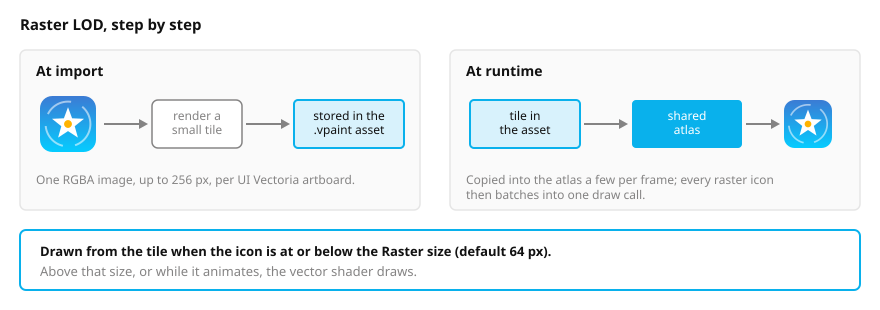

Raster LOD
Bitmap tiles for small static icons.
Small icons are cheaper as a bitmap. Raster LOD lets VectoriaImage draw a pre-baked raster tile at a small size, and the vector shader for everything else.
How it works

- At or below the Raster size (in physical pixels) an icon is drawn from a raster tile.
- The tile is baked at import, one image per UI Vectoria artboard, and stored in the asset. At runtime it is copied, a few per frame, into one shared texture atlas, so all raster icons batch together.
- Above that size, the vector shader draws.
Settings
- The project default is in Settings (4–256 px, default 64).
- Each
.vpaintcan override it in the importer. Multi-selection edits several files at once. - Each tile is one RGBA image of up to 256 px; the importer shows the added file and memory size.
Raster LOD or Runtime Raster?
Raster LOD is for small icons and costs nothing at runtime. For large, complex artwork use Runtime Raster, which bakes on the GPU when the icon is first drawn. They share the same atlas and can be used together; see How Drawing Is Optimized.
Sprite output
The importer can instead save each tile as a Sprite asset. Add the file, or its sprites, to a Unity Sprite Atlas to batch them with other sprites. Keep Allow Rotation off in the atlas; a rotated sprite falls back to the vector shader. Only uGUI VectoriaImage uses it.